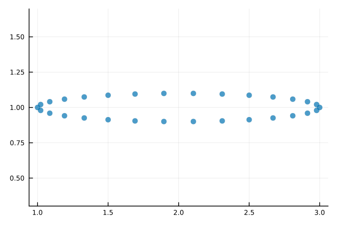

Quick Start
The following plots require these lines to be run first:
using EllipseSampling, Plots; gr()
default(palette=:seaborn_colorblind6, msw=0, markeralpha=0.7,
aspect_ratio=:equal, label=nothing, dpi=150, size=(450,300))
Plots.scalefontsizes(0.75)Equally Spaced Points
To generate 9 equally spaced points on an ellipse, with x radius of 1.0 and y radius of 0.5, no rotation and a centre of $x,y = [2,1]$ we use:
e=construct_ellipse(1.0, 0.5, 0.0, 2.0, 1.0)
points=generate_N_equally_spaced_points(9, e; start_point_shift=0.0)
scatter(points[1,:], points[2,:])
Or alternatively:
points=generate_N_equally_spaced_points(9, 1.0, 0.5, 0.0, 2.0, 1.0; start_point_shift=0.0)
scatter(points[1,:], points[2,:])
Rotated Ellipses
If instead our ellipse has an anticlockwise rotation of $\frac{\pi}{3}$ radians or 60 degrees, we can modify that argument to construct_ellipse.
e=construct_ellipse(1.0, 0.5, pi/3.0, 2.0, 1.0)
points=generate_N_equally_spaced_points(9, e; start_point_shift=0.0)
scatter(points[1,:], points[2,:])Clustered Points
To more easily see the clustering effect we will increase the number of points generated and decrease the y radius. Note, the closer in magnitude the major and minor axis radii are, the weaker the clustering effect. To generate 30 clustered points on an ellipse, with x radius of 1.0 and y radius of 0.1, no rotation and a centre of $x,y = [2,1]$ we use:
e=construct_ellipse(1.0, 0.1, 0.0, 2.0, 1.0)
points=generate_N_clustered_points(30, e; start_point_shift=0.0, sqrt_distortion=0.0)
scatter(points[1,:], points[2,:])
The clustering effect becomes weaker when we increase the parameter sqrt_distortion towards 1.0:
plot()
e=construct_ellipse(1.0, 0.1, 0.0, 2.0, 1.0)
for sqrt_distortion in 0.0:0.2:1.0
points=generate_N_clustered_points(10, e; start_point_shift=0.0, sqrt_distortion=sqrt_distortion)
scatter!(points[1,:], points[2,:], label=string("sqrt_distortion=",sqrt_distortion))
end
The clustering effect is completely gone if our ellipse is a circle:
plot(palette=:Paired_6)
e=construct_ellipse(1.0, 1.0, 0.0, 2.0, 1.0)
for sqrt_distortion in 0.0:0.5:1.0
points=generate_N_clustered_points(10, e; start_point_shift=0.0, sqrt_distortion=sqrt_distortion)
scatter!(p, points[1,:], points[2,:], label=string("sqrt_distortion=",sqrt_distortion),
markersize=7-sqrt_distortion*4, markeralpha=0.6)
end
Custom Sampling Method
If we want to use a custom sampling method that is different to the equal spacing and clustered methods then we can use generate_perimeter_point coupled with any arbitrary distribution defined on [0,1]. For example, if we want to take 100 uniform random samples (uniform with respect to arc length) of our ellipse perimeter we would use:
e=construct_ellipse(1.0, 0.5, 0.0, 2.0, 1.0)
N = 100
samples = rand(N)
# wrap e in Ref so that the function correctly broadcasts across samples
points = generate_perimeter_point.(samples, Ref(e))
points = reduce(hcat, points)
scatter(points[1,:], points[2,:])